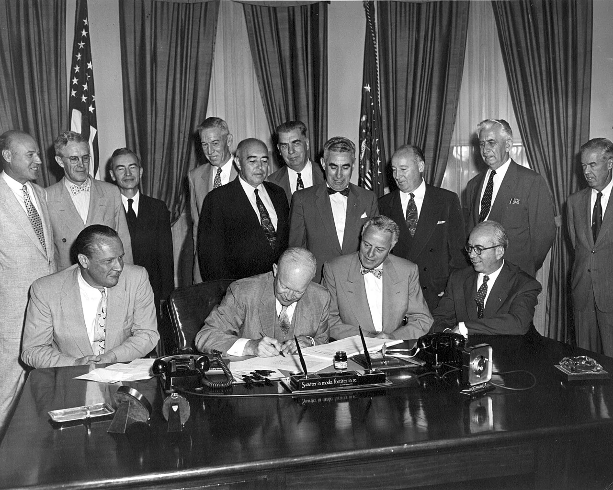
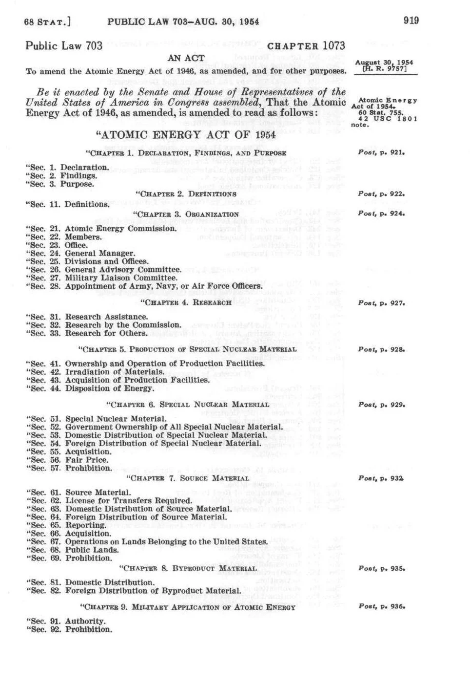
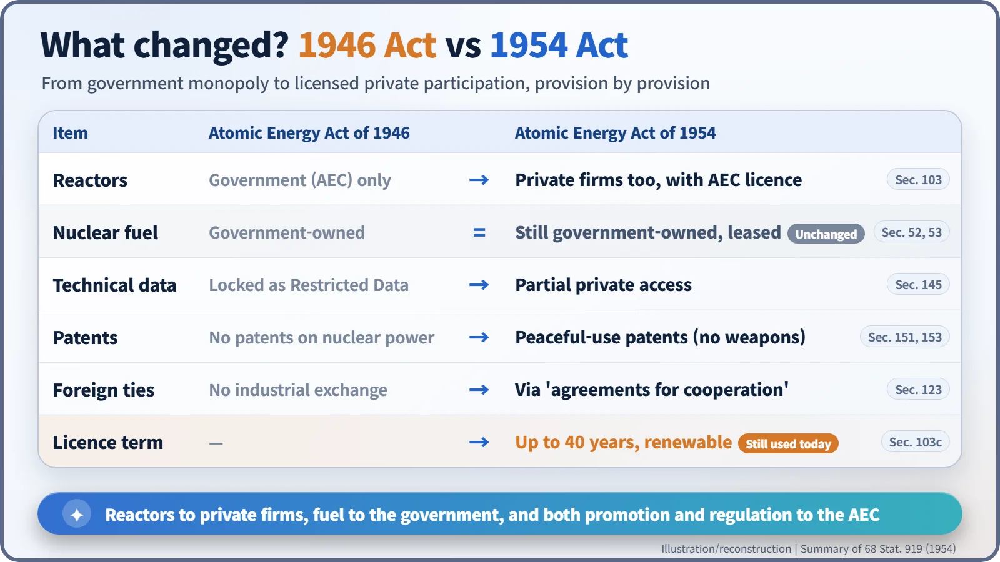
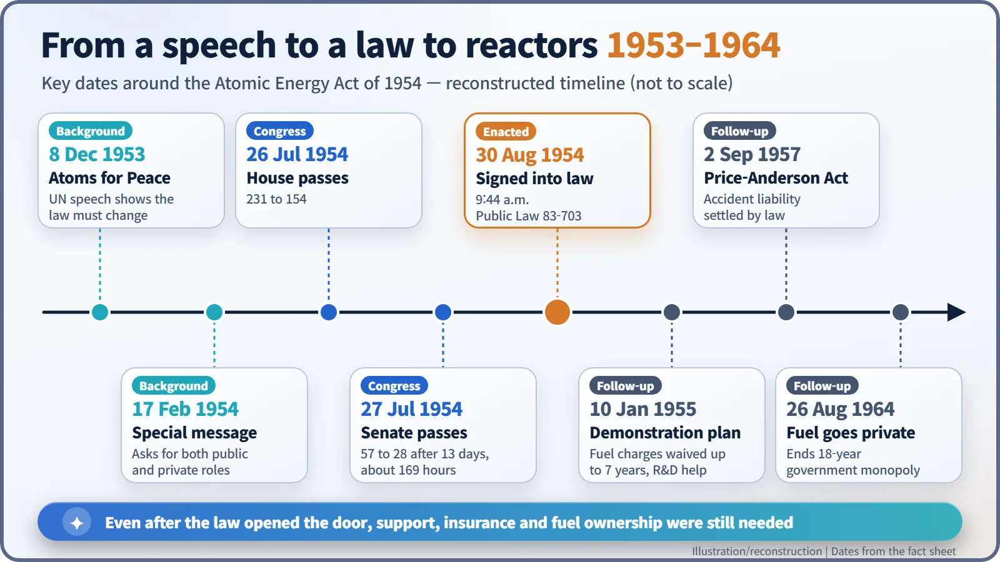

Nuclear History · 176
The Door That Opened at 9:44 a.m. — The Atomic Energy Act of 1954 and the Start of Private Nuclear Power
After a 13-day Senate fight, a new law let companies own reactors under AEC licence, while the fuel stayed government property for another decade.
At 9:44 a.m. on 30 August 1954, President Eisenhower signed the Atomic Energy Act of 1954, ending the rule that only the U.S. government could own a nuclear reactor. Private companies could now build and operate reactors under licence, while the fuel stayed government property for another decade. The law also set a 40-year licence term that still shapes American nuclear plants today.
A timestamp at the end of a law
Volume 68 of the United States Statutes at Large contains a law that runs for 43 pages, starting on page 919. Its very last line is a timestamp: "Approved August 30, 1954, 9:44 a.m., E.D.T." That was the moment President Dwight D. Eisenhower (1890–1969) finished signing the Atomic Energy Act of 1954. From then on, a company, not just the government, could own a nuclear reactor in the United States. Before anyone could build a commercial nuclear power plant, the law had to allow it. [1]

A country where no one else could own a reactor
The Atomic Energy Act of 1946, known as the McMahon Act, had kept atomic energy inside a government fence. All fissionable material, such as uranium-235 and plutonium (materials that can sustain a chain reaction), belonged to the government, and only the Atomic Energy Commission (AEC) could run the facilities that made it. Technical know-how was classified as "Restricted Data", and the United States could not share even industrial information with other countries. A utility that wanted to build a reactor simply had no legal route to do so.
The mood shifted with Eisenhower's "Atoms for Peace" speech at the United Nations on 8 December 1953. He had promised the world that America would share peaceful nuclear technology, yet American law still blocked that kind of exchange. On 17 February 1954 he sent a special message asking Congress for legislation "making it possible for American atomic energy development, public and private, to play a full and effective part in leading mankind into a new era of progress and peace." [2]
Thirteen days and 169 hours in the Senate
The bill was H.R. 9757, introduced on 30 June 1954 by Representative W. Sterling Cole (1904–1987), chairman of the Joint Committee on Atomic Energy, together with a companion Senate bill, S. 3690. The House passed it on 26 July by 231 votes to 154.
The Senate was far noisier. The real question was who would make atomic electricity, and who would profit from it. Supporters of public power, such as the Tennessee Valley Authority (TVA), worried that technology paid for by taxpayers would end up as private patents and private profits. Supporters of the bill argued that competing private companies would develop nuclear power faster. A separate electricity deal, the "Dixon-Yates" contract that the AEC was negotiating with private utilities, added fuel to the fire.
Opponents used extended debate, and Majority Leader William Knowland answered with round-the-clock sessions. According to newspaper reports at the time, the bill finally passed the Senate on the night of 27 July by 57 votes to 28, after "13 days and nearly 169 hours of debate". The final law did include a clause giving public bodies and cooperatives priority when the AEC sold electricity from its own facilities. [5] [1]
So what actually changed?
The change started in the very first section. The new law declared that atomic energy should promote world peace, improve the general welfare, raise the standard of living and "strengthen free competition in private enterprise". National defence and security, however, remained the "paramount objective". [1]


Think of it as building a house. Private companies could now build and own the house, that is, the reactor. But first they needed a licence from the AEC, the equivalent of a building permit, and the licence came with a promise to follow the AEC's safety standards. The fuel, on the other hand, still belonged to the government. Companies would lease it for the life of their licence and pay a charge for using it. Patents on peaceful uses became possible, although inventions useful only for weapons stayed off-limits. And the United States could now cooperate with other countries, provided they signed an "agreement for cooperation". Named after the section that created them, these "123 agreements" remain the basic framework of American nuclear diplomacy today. [1]
The door was open, but nobody rushed in
A new law did not make utilities queue up. Reactors were expensive and unfamiliar. So on 10 January 1955 the AEC announced its Power Demonstration Reactor Program. The Commission offered to waive the charges for leased nuclear fuel for up to seven years and to support research and development, while industry carried the technical and financial responsibility, including any cost overruns. The first round drew four proposals, and it produced Yankee Rowe in Massachusetts, the Enrico Fermi 1 plant in Michigan and the Hallam plant in Nebraska. [2] [3]

One big obstacle remained: if a serious accident happened, who would pay, and how much? That worry led to the Price-Anderson Act of 1957. Fuel ownership took even longer. Only when President Lyndon Johnson signed the Private Ownership of Special Nuclear Materials Act on 26 August 1964 could companies own their fuel, ending what the official AEC history calls an "eighteen-year mandatory government monopoly". [2]
The number 40 in the statute book
One number in the 1954 Act is still very much alive. The section on commercial licences, Section 103c, says each licence is issued for a period "not exceeding forty years" and "may be renewed". That is why American nuclear power plants have 40-year operating licences. The U.S. Nuclear Regulatory Commission (NRC) explains that the 40-year term was set by economic and antitrust considerations, not by limits of nuclear technology. Licences can therefore be renewed for 20 years at a time after a fresh review, and almost all operating U.S. reactors now hold, or have applied for, licences covering 60 years of operation. [1] [4]
The law also left a structural legacy. It made the AEC both the promoter of the nuclear industry and its safety regulator, rather like a team coach who also referees the match. Criticism of that double role grew, and in 1974 the AEC was abolished. An independent regulator, the NRC, began work on 19 January 1975. Today the NRC still describes the Atomic Energy Act of 1954, amended many times, as "the fundamental U.S. law on both the civilian and the military uses of nuclear materials". More than 70 years on, the signature made at 9:44 that morning is still in force. [2]